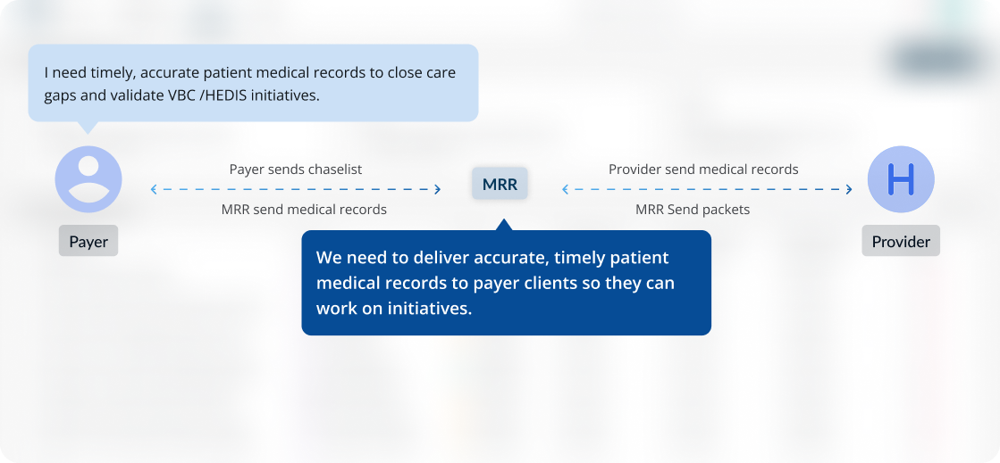
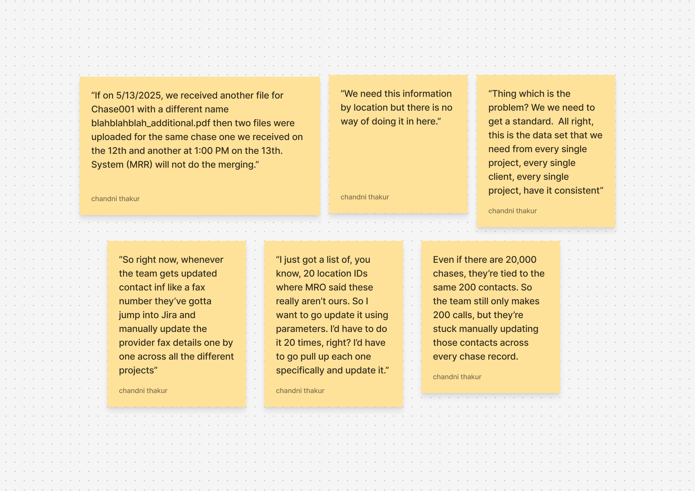
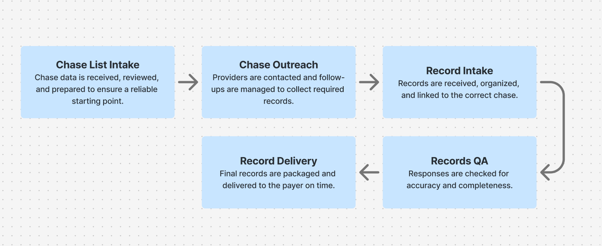
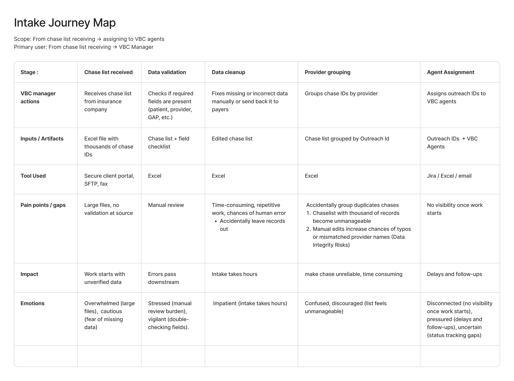
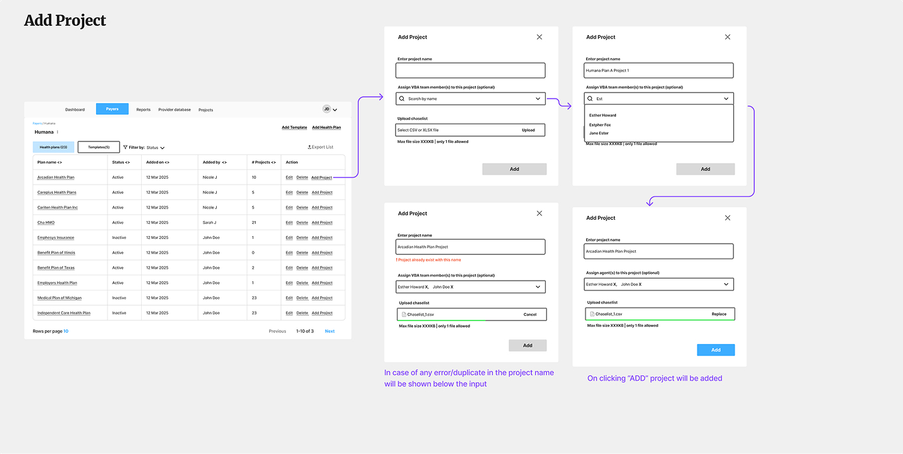
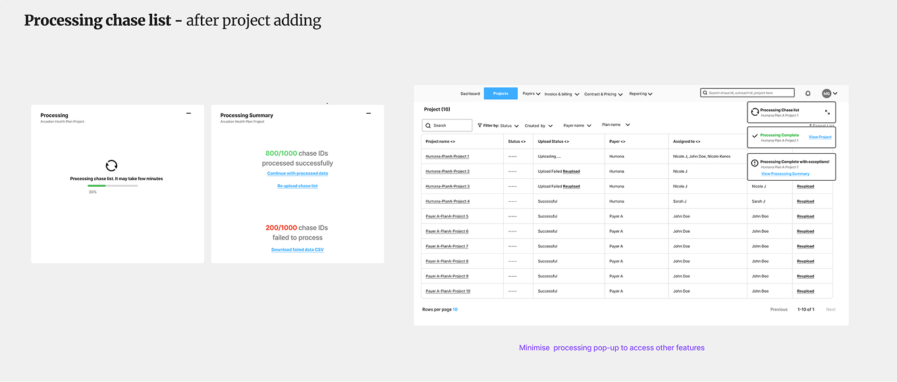
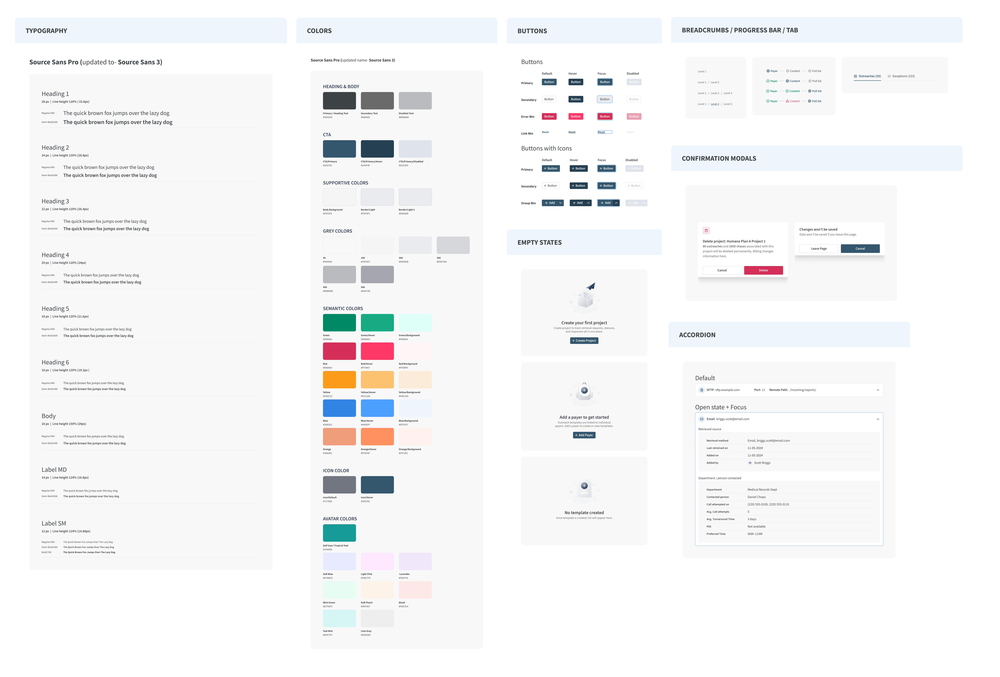

Centralized system to track high-volume patient medical record retrieval across multiple roles
- Team
- Product owner
- Business analyst
- 7-8 developers
- Role
- Product Designer
- Aug 2025 - Dec 2025
- Duration
- 5 Months
Overview
MRR is a platform that enables VBC team to track the patient medical records from requesting them from providers to deliver it to there clients. This project exist to bring control, visibility, and consistency to the record-retrieval process, ensuring high-volume work feels manageable rather than chaotic.
Company role
Payers (insurance companies) run large-scale campaigns such as Value-Based Care and HEDIS initiatives to identify care gaps and validate whether patients have received recommended services. These campaigns depend on accurate and timely medical records.
VBC Team, as a medical record retrieval partner, is responsible for collecting this data from providers on the payer’s behalf. At scale, this means managing thousands of patient records simultaneously.

Problem
The lack of centralized application for tracking medical records forces users to rely on spreadsheets, emails, and disconnected tools, leading to inefficiencies, delays, and a fragmented workflow, which risks of missed timelines and revenue leakage.
Key problems VBC team facing are:
- Manual status checks across thousands of active records
- Multiple follow-ups per record to confirm ownership or status
- Delays in identifying blocked or stalled records, sometimes days after the issue occurred
- Managers spending significant time each week reconciling updates instead of addressing risks
Talking to users
To quickly uncover requirements and pain points, discovery was conducted through cross-functional walkthrough sessions instead of one-on-one interviews. Live reviews of existing screens and workflows enabled contextual questions at key decision points, revealing how work actually happens.
This approach helps us to:
- Observe real workflows in context
- Clarify handoffs and dependencies across roles
- Identify breakdowns as they occurred in the process
Participants
- VBC manager
- VBC agents
- Billing team
Key questions explored
- How are patient records currently tracked across client projects?
- What happens when a record is delayed or incomplete?
- What information is critical at each stage of the retrieval process?
- How do different roles know when action is required from them?
- Where do errors or delays most commonly occur?
Insights from Interviews
During discovery interviews, I listened to users share their frustrations and challenges in their own words

Jobs to be done discovered
Understanding VBC Managers and VBC Agents roles across the entire retrieval cycle was essential to uncover their core jobs. Below are a few of their Jobs To Be Done.
As a VBC manager, I want to chase-level monitoring so that I can quickly surface VBC agent escalations and unblock progress: Managers rely on agent updates to understand what’s stuck. Chase-level monitoring surfaces issues early so managers can intervene quickly and keep progress on track.
As a VBC agent, I want to update similar information across multiple chases at once so that I can reduce repetitive work and can save time: It’s common for VBC agents to work on multiple chases that require the same updates. Entering identical information chase by chase is time-consuming and increases the risk of errors.
Workshop 1- workflow understanding
I received a lot of fragmented information about the workflow. To make sense of it, I mapped the entire medical record retrieval journey step by step to understand how work actually moved across the process. This helped me see the end-to-end flow clearly and plan screens that better supported each stage.

Workshop 2- user journey mapping
This workshop focused on creating a journey map for the Project Intake journey—from the moment a chase list is received from the payer to when work is assigned to VBC agents.

Wireframing solutions
With a clearer understanding of the requirements, I moved into wireframing starting with project creation and chase list upload. My primary goal was to validate the proposed solution early, while also accounting for technical constraints that could impact how the experience was built.


Wireframe feedback & iteration
I initially shared the wireframes with the internal team to confirm feasibility within the timeline. I then presented them to users to gather feedback and validate the overall direction. Once the feedback was incorporated, the wireframes were finalized as the approved direction.
Designs
Existing design system
Company already had an existing design system used in another application. I reviewed it closely and identified a few accessibility gaps, along with usability concerns such as an oversized application header that felt disproportionate for this workflow.
Opportinity to evolve current design system
Rather than reusing the system as-is, I took this as an opportunity to propose a fresh visual direction tailored specifically for this application. I connected with the client-side designer to understand their perspective and shared multiple design variations exploring a cleaner, more usable approach.
After discussions and iterations, the stakeholders agreed to move forward with a refined design system, introducing a fresh look while retaining familiar elements with thoughtful tweaks.

Screens
.png)
.png)
.png)
.png)
.png)
.png)
.png)
.png)
.png)
.png)
.png)
.png)
.png)
.png)
Challanges faces during the project
#1 Evolving requirements during discovery
At the start of the project, the business requirements were not fully defined. As we began discovering the process and ideating solutions, additional use cases surfaced that needed to be addressed to make the retrieval workflow smoother. This required the engineering team to revisit estimates and re-align timelines to deliver a realistic MVP.
#2 Managing design handoff across a lengthy workflow
Due to the length and complexity of the workflow, the number of screens grew significantly. With active weekly feedback sessions running in parallel, it became challenging for developers to keep track of the latest designs and changes during handoff.
key takeaways
I enjoyed working on this project—it was fun but also stressful because of the tight timelines. If given more time, I would have conducted usability testing to further refine the UI
This project also helped me better understand developer pain points, especially during design handoff. Designing for a large number of screens pushed me to think more carefully about documentation, clarity, and collaboration with engineering.